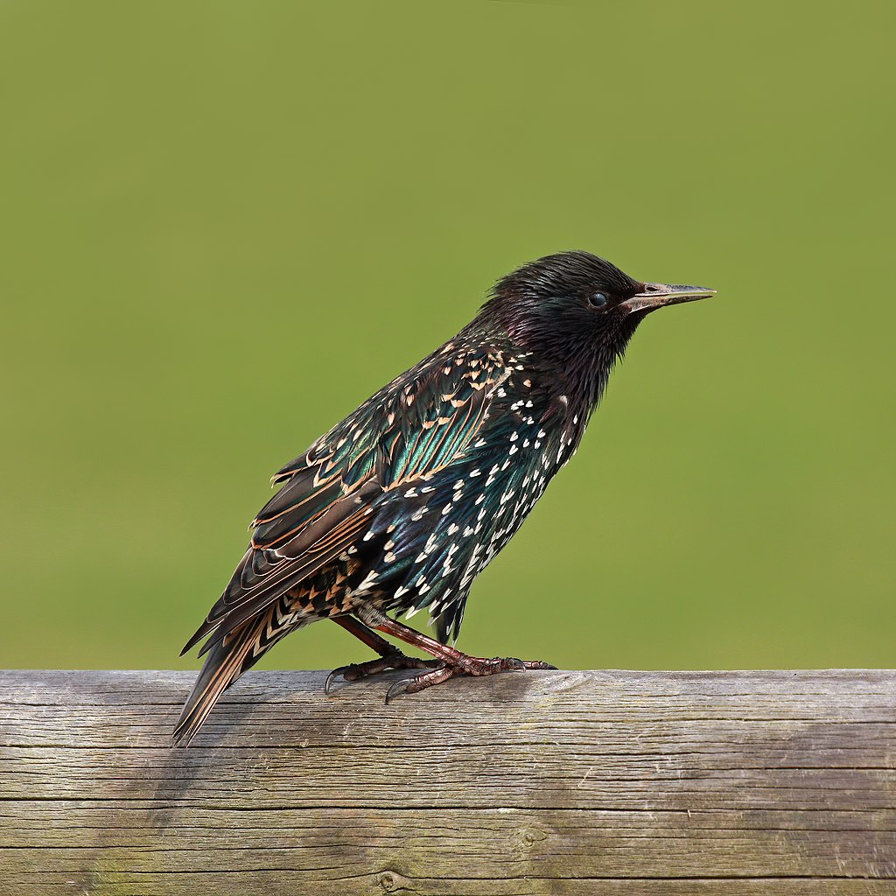
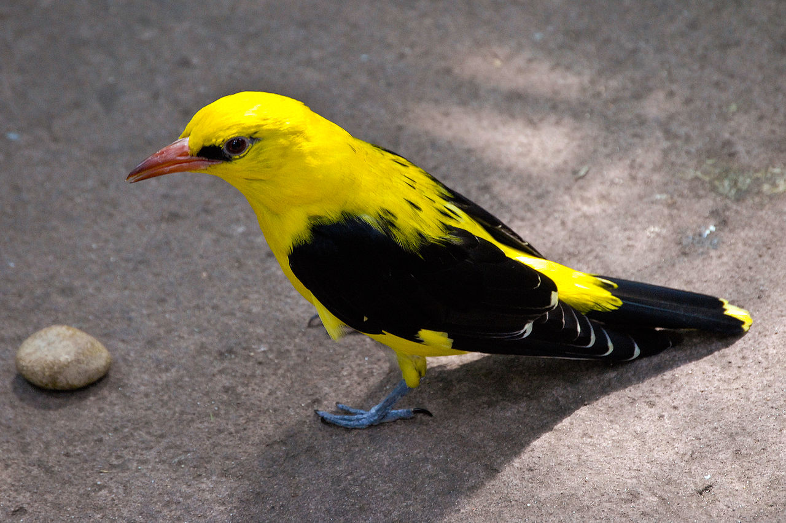
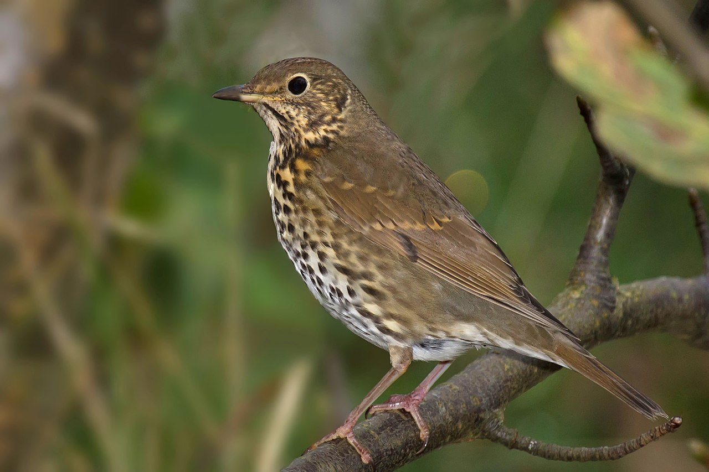
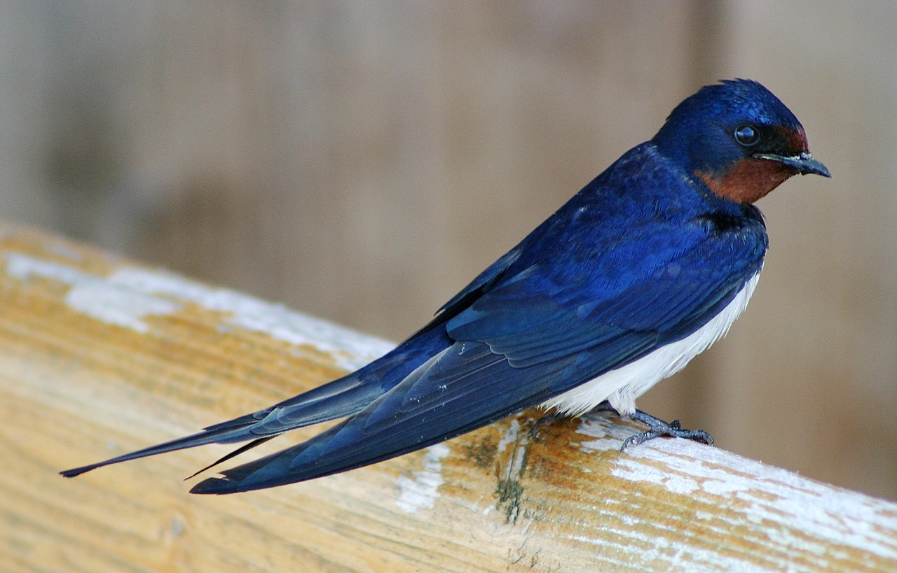

Gil
Gatunek małego ptaka z rodziny łuszczakowatych (Fringillidae), zamieszkujący Eurazję. Nie jest zagrożony.

Gatunek małego ptaka z rodziny łuszczakowatych (Fringillidae), zamieszkujący Eurazję. Nie jest zagrożony.
Gatunek średniej wielkości ptaka z rodziny szpakowatych (Sturnidae). Częściowo wędrowny. Pierwotnie zamieszkiwał wyłącznie Eurazję. Nie jest zagrożony wyginięciem. Dzięki introdukcji gatunek kosmopolityczny, w 13 podgatunkach występuje na każdym kontynencie poza Antarktydą; poza rodzimym zasięgiem także w Ameryce Północnej (od Jukatanu po Alaskę), Argentynie, Południowej Afryce, wschodniej Australii, Nowej Zelandii i okolicznych wyspach. Jest to gatunek inwazyjny.
Gatunek średniej wielkości ptaka wędrownego z rodziny wilgowatych (Oriolidae), jedyny z tej rodziny rozmnażający się w północnej strefie umiarkowanej. Nie jest zagrożony wyginięciem.
Gatunek średniej wielkości ptaka z rodziny drozdowatych (Turdidae), zamieszkującego Eurazję. Wierzch ciała brązowy o ciepłym odcieniu, kuper i pokrywy nadogonowe oliwkowe, ogon i wierzch głowy pomarańczowobrązowe. Spód ciała kremowy z gęstymi brązowymi plamkami. Wyróżnia się trzy podgatunki. Do jego charakterystycznej piosenki, w której powtarza muzyczne frazy, często odnoszono się w poezji.
Gatunek niewielkiego ptaka wędrownego z rodziny jaskółkowatych (Hirundinidae). Zamieszkuje rozległe obszary na kuli ziemskiej – niemal całą Eurazję (prócz północnych krańców), część północnej Afryki i prawie całą Amerykę Północną. Zimuje w południowej i południowo-wschodniej Azji, północnej Australii i niektórych wyspach Oceanii, w subsaharyjskiej Afryce, Ameryce Środkowej i większej części Ameryki Południowej. Pojedyncze osobniki notowano także w Antarktyce.
Paweł Kowalczyk 2022